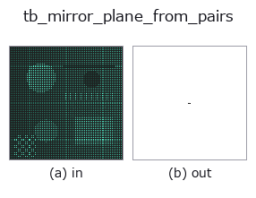

typed op• Data kinds: points → matrix
• Call: fullseye.apply(img, "tb_mirror_plane_from_pairs", a=0.5, b=0.5) (the 2-D model is one image plus two scalar knobs a,b∈[0,1])

*The figure is the actual output on a synthetic 128×128 input. Left: input, right: output. Point clouds are drawn as a top-down scatter (brightness = z), 1-D series as a line plot, volumes as the maximum-intensity projection along z, videos as the middle frame, complex images as magnitude; return values that are not pictures are shown as the values themselves.*
*Knob a does not change the output (measured: identical at 0.1 / 0.5 / 0.9).*
*Knob b does not change the output (measured: identical at 0.1 / 0.5 / 0.9).*
Stages (the ops that come before → this op, left to right):
▸ tb_mirror_plane_from_pairs: stages (docs site)
On other images (synthetic scene / photo / coins. Top row: inputs, bottom row: their outputs. Knobs at default):
▸ tb_mirror_plane_from_pairs: other inputs (docs site)
Derives the midsagittal plane from corresponding left/right landmarks. → (2, 3) (row 1 = point, row 2 = normal).
The midpoints of left-right pairs (i, j) all lie on the midsagittal plane. So it suffices to fit a plane to that set of midpoints —— the key point is that the plane is determined regardless of the amount of deformation, which makes it different from the plane that minimises the residual (symmetry3d.detect_reflection_symmetry).
★ Measured on 2026-09-06: with a one-sided deformation of 6.4 mm, the residual-optimal plane deviated from the true midsagittal plane by 2.92 mm / 1.72 degrees and erased 46 % of the asymmetry (gain 0.54). With this landmark plane the gain is 1.03. Use the residual-optimal plane to find it, this one to state the amount.
*midline* are the indices of landmarks on the midline (which have no pair). If given, they are added to the set of midpoints to stabilise the plane fit.
pairs=None is the convention of pairing the first half with the second half (i with i + N//2). It matches the storage format common in morphometrics, which lists all left landmarks first and then the right ones in the same order. An odd number of points is rejected —— silently truncating an order that cannot be split in half shifts every pair by 1 and swaps the sign of all of them.
The shapestat op mirror_plane_from_pairs bridged into the 2-D evolution registry. The implementation is the same; only the calling convention is adapted to op(v, a, b). This op has no tunable parameters; neither a nor b is used.
• Sample-data catalog (download URLs / licences) — 2-D uses skimage.data (BSD/public domain) plus synthetic images; 3-D lists download URLs for real data sources (Stanford, PDS, …).
• Operator provenance and references — the sources of the research/methods this op family came from.
The program below has been verified to run (same input as the figure). In Studio's help this block becomes buttons that load and run it on the spot.
img_to_points 0.50 0.50 tb_mirror_plane_from_pairs 0.50 0.50
▸ Load this pipeline · Load & run
The examples below call the underlying ledger op mirror_plane_from_pairs. This bridge op is the same implementation adapted to the fn(v, a, b) convention, so the behaviour carries over unchanged (only the call form differs).
• shapestat_landmark_tour — py -3.11 examples/shapestat_landmark_tour.py
matrix as input)identity · tb_mat_pinv · tb_mat_cond · tb_stat_covariance · tb_stat_correlation · tb_intrinsics_to_fullseye · tb_intrinsics_to_carla · matrix_to_img
typed)tb_points_to_voxel · tb_estimate_point_normals · tb_iss_keypoints · tb_project_points · tb_render_point_depth · tb_statistical_outlier_removal · tb_radius_outlier_removal · tb_voxel_grid_downsample
*Provenance: ops.py — 2D operator registry. This per-op note is generated by tools/opdocs.py md (do not hand-edit).*
© 2026 Kazufumi Furuse — Fullseye operator documentation. Licensed under Apache-2.0.